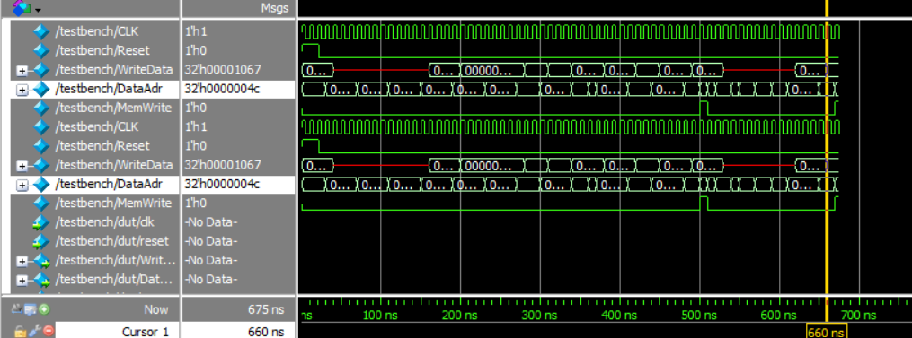
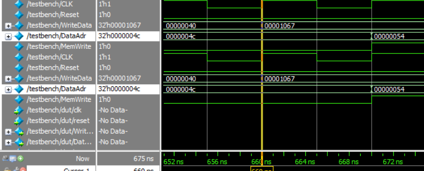

flowchart LR
MEM[Unified memory]
CTRL[Controller]
subgraph PATH[Datapath]
PC[Program counter]
IR[Instruction register]
RF[32 × 32 register file]
EXT[Immediate extension]
ALU[ALU]
AOUT[ALUOut register]
MDR[Memory-data register]
end
PC -->|instruction address| MEM
MEM -->|instruction| IR
MEM -->|load data| MDR
IR --> RF
IR --> EXT
RF -->|operands| ALU
EXT -->|immediate| ALU
PC --> ALU
ALU --> AOUT
AOUT -->|data address| MEM
RF -->|store data| MEM
IR -->|opcode and function fields| CTRL
ALU -->|zero| CTRL
CTRL -. control signals .-> PC
CTRL -. control signals .-> RF
CTRL -. control signals .-> ALU
Multicycle RISC-V Processor
E85 · SystemVerilog processor architecture and verification
I implemented and verified a 32-bit multicycle RISC-V processor in SystemVerilog. The processor breaks each instruction into several short clocked steps, allowing the datapath to reuse one ALU and one unified memory for instruction fetches, data reads, and data writes.
The final simulation executes a complete machine-code test program and writes 0x1067 to byte address 0x54 (84 decimal). That store verifies the instruction sequence across the controller, datapath, register file, ALU, immediate generator, and memory interface.
LanguageSystemVerilog
Architecture32-bit multicycle RISC-V
VerificationSelf-checking simulation
Final result0x1067 → address 84
What I built
The design is organized as a hierarchy of small reusable modules. A controller decodes the current instruction and advances a finite-state machine. The datapath holds the program counter, instruction, register operands, memory data, and ALU result between cycles. A unified memory stores both instructions and data, so an address multiplexer selects either the program counter during instruction fetch or the computed data address during a load or store.
The structural modules include parameterized registers, two- and three-input multiplexers, an ALU, a 32-register file, immediate extension logic, instruction and ALU decoders, the main finite-state machine, and the top-level processor and memory wrappers.
Multicycle control
Each instruction begins in the same fetch and decode states. Later states depend on the opcode. Intermediate values are stored in registers so the ALU can be reused for incrementing the program counter, forming an address, performing an arithmetic operation, and evaluating a branch.
| State or path | Main operation | Important control action |
|---|---|---|
| Fetch | Read the instruction and calculate PC + 4 |
Write the instruction register and program counter |
| Decode | Read source registers and form the immediate | Select the next execution path from the opcode |
| Load/store address | Calculate rs1 + immediate |
Save the effective address in ALUOut |
| Load | Read unified memory, then write rd |
Select memory data for register writeback |
| Store | Write rs2 to unified memory |
Assert MemWrite for one cycle |
| R-type / I-type ALU | Perform the decoded ALU operation | Write the saved ALU result to rd |
| Branch | Compare register operands | Update the PC only when the branch condition is true |
JAL |
Save the return address and redirect the PC | Write PC + 4 to rd and load the jump target |
AUIPC |
Add the upper immediate to the instruction PC | Write the sum directly to rd |
Extending the processor for AUIPC
The original immediate path handled I-, S-, B-, and J-type encodings. I added an ImmIsU control signal so the extender can recognize the U-type format and concatenate Instr[31:12] with twelve zeros. The opcode decoder routes AUIPC to a new controller state, where the ALU adds that immediate to the saved instruction address and writes the result back to the destination register.
This change touched the instruction decoder, immediate extender, controller interface, datapath, and main state machine. Keeping it as a separate control path made the extension explicit without changing the behavior of the existing instruction formats.
Supported instruction behavior
The submitted design exercises the following processor paths:
- Arithmetic and logic:
add,sub,and,or, andslt - Immediate arithmetic through I-type ALU instructions
- Memory access:
lwandsw - Control flow: conditional branch and
jal - PC-relative address generation:
auipc
The ALU produces addition, subtraction, bitwise AND, bitwise OR, and signed less-than results. Its zero output feeds the branch decision logic. Register x0 remains hardwired to zero because reads return zero and writes to address zero are suppressed.
Verification strategy
I loaded the test program from memfile.dat and observed the top-level processor interface throughout the run. The waveform tracks the clock, reset, memory write data, data address, and MemWrite. This gives a compact end-to-end check: a correct final store depends on all preceding instructions producing the right register values and control-flow decisions.

MemWrite pulse near the end marks the final store.
The full waveform shows the address and write-data buses changing as the processor fetches instructions and executes memory operations. MemWrite remains low during instruction fetches and calculations, then pulses only during the store state.
Final memory write

WriteData holds 0x00001067; the following store cycle presents address 0x00000054 and asserts MemWrite.
The zoomed view captures the result of the complete test. WriteData has settled to 0x00001067 before the store, and the data address advances to 0x00000054, which is byte address 84. The controller then asserts MemWrite, committing the value to unified memory. Because this is the expected terminal write, it demonstrates that the processor reached the correct point in the program with the correct computed result.
What I learned
This project made the boundary between datapath and control much more concrete. A multicycle processor is less about writing one large block of logic and more about coordinating when each value becomes valid, where it is stored, and which shared resource uses it next. Most debugging came down to following those values one cycle at a time through the finite-state machine.
Adding AUIPC also showed how an ISA feature propagates through the entire design. Even a seemingly small instruction requires agreement among encoding, immediate generation, ALU inputs, controller sequencing, and register writeback. The final program-level waveform was therefore more valuable than checking the new state in isolation.